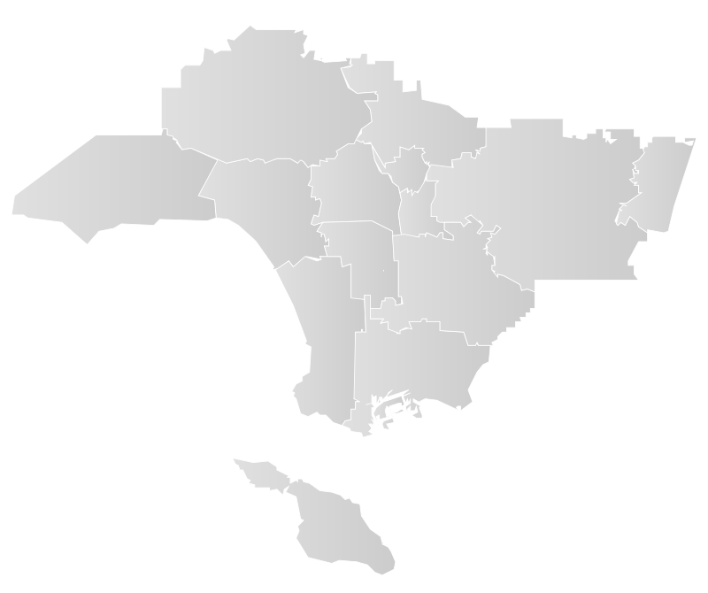
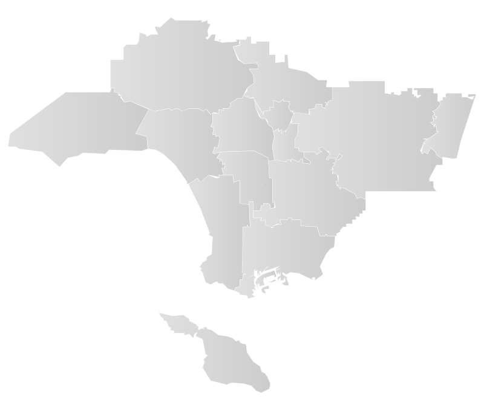
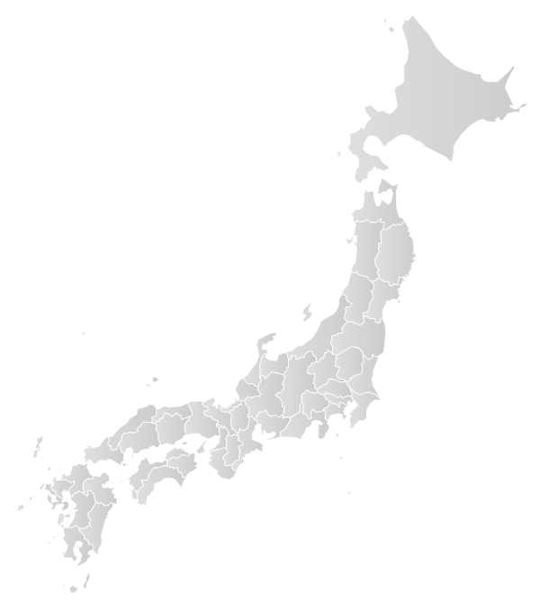
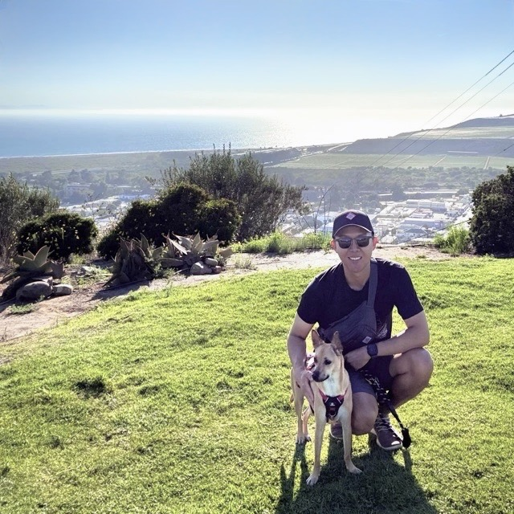

Loading

Hi there, Tim here 👋 Welcome to Places Explored, a personal project where I document and share favorite spots explored across the LA area and Japan.
As a web design & development professional with a decade of experience, I've worked on many projects for a variety of audiences and goals, but this project was something of a first – a labor of love (and fun), built during my gap year to share with friends and family, as well as fellow explorers looking for inspiration.
Why the seemingly random pair of LA and Japan?Because where you choose to live and spend your time becomes a part of who you are. Originally from Korea, by way of Chicago and Boston, I moved to the city of LA in 2012. years later, LA is still home base, and the many neighborhoods I've explored in the city and its sprawl have been my life's backdrop for well over a decade. Thanks to pup extraordinaire Rui – fellow LA transplant rescued around the Mexico-California border, family member since 2023, and now leader of our hiking squad – I've also spent a lot of time looking for new trails in LA's surprisingly abundant nature and green spaces, all of which I plan to share here (with dog photos no one asked for).
Japan, on the other hand, has been one of my favorite travel destinations abroad. Unlike most places I've traveled to and checked off a list, Japan has kept me coming back year after year, each time to explore more of its culture, food, and scenery that change with each region and season. After rounds of shorter trips and years of learning Japanese to get more out of each visit, I went on on a longer cross-country adventure in 2025 with my partner in crime Alex. You can trace that journey here in this project.
Whether I'm visiting a new place or one of my regular spots, I like to capture the moment in a few photos because places can feel different each time you visit – by time of day, weather, season, and more.
So for most of this project, I source images from my own photo albums wherever possible. If I was, however, missing photos of a spot altogether or didn't have ones I felt could do justice to the actual place, I plan to use photos from friends or sourced online – either with Creative Commons or licenses I purchase for this project – so all photos will display the actual photographer's name or initials to give credit due. As such, please do not re-use any photos from this project without permission.
For photos I took myself, please feel free to contact me if you'd like to learn more about a photo or ask about re-use. For quicker load times, I’ve compressed photo file sizes, so upon request and approval of re-use, higher-resolution versions can be provided in their original dimensions for better quality.
Los Angeles is geographically complex with 100+ neighborhoods packed into almost 500 square miles of LA city proper alone, expanded further by the suburban sprawl of LA County spanning over 4,000 square miles, plus four neighboring counties collectively referred to as the Greater Los Angeles area.
That being the case, deciding on what to cover and how to organize the content took quite some time. For scope, I chose to narrow the focus primarily to the city of LA and LA County – making only a few exceptions for favorite spots outside those boundaries that I just couldn't bring myself to skip.
Even so, how regions and neighborhoods are defined in LA city alone differ in boundaries and granularity across Google, Apple, and city maps, even varying depending on the Angeleno you consult, so for this project's regional map and neighborhood definitions, I relied on a single source that felt most organized, Mapping LA by the Los Angeles Times , which makes its data available for re-use under Creative Commons . Since this project focuses on places I've personally explored, you'll also find some subjective grouping of nearby neighborhoods or cities if I tend to visit certain areas together given the travel distance or if there are shared elements in things to do there.
The map of Japan showing its 47 prefectures, on the other hand, was sourced from amCharts , also available for use under Creative Commons. The high-level regions used in this project align with the most commonly referenced regional blocs (地域ブロック) of Japan.
Both SVG maps have been stylistically modified for consistency with each other and the visual design of this project. Clickable markers on the maps were manually positioned to the best of my ability to help visualize location, but marker locations and sizes are estimates at best, not geographically exact.
Given the sheer size of the LA region and, of course, Japan as an entire country, there are also many places I simply haven't had a chance to explore yet, so if any of your favorite spots appear to be missing, please know that this is not a comprehensive, exhaustive list of all areas and/or attractions in LA or Japan, but rather a personal exploration log that I hope to build upon over time.
Tailored to Target Users – The design of this project went through several iterations using rapid prototyping and user testing with members of the target audience – lucky for me, friends and family in this case. User feedback informed the design direction of the interactive map and catalog – two different ways to browse the same content, each designed for specific user personas: a map for those who preferred a visual and geographic representation of places, versus a catalog for those who wanted to glance by lists and narrow down by characteristics to a subset of places that interests them.
Mobile Responsive – This project was designed to flexibly adapt its UI and layout to a variety of small to large window and screen sizes. Usability has been tested and confirmed on several smartphone models, as well as tablet devices in both landscape and portrait orientations. The design for each viewport was carefully optimized, maintaining the robustness of features but tailoring the UX/UI to the unique advantages and user behaviors associated with mobile versus desktop.
Accessible and Navigable by Keyboard or Screen Readers – This project was designed to prioritize accessibility. The flexible layout handles several levels of browser-based enlargement (ex. command +/- or pinch-to-zoom on mobile), and the UI and content has been built with alt text, semantic HTML5 markup and WAI-ARIA specs as necessary, making navigation and content consumption possible using keyboard only or with screen readers, such as VoiceOver on macOS.
Built in Vanilla JS – This Single-Page Application (SPA) was programmed in vanilla JS in ES6 syntax without the use of external UI frameworks like React or libraries like jQuery. For lightweight websites and apps with minimal UI and state management needs, I prefer to develop in vanilla JS without external dependencies, which can help improve load times and better ensure long-term stability by protecting against deprecations of specific versions of third-party frameworks or libraries.
Custom Styles for UI, Layout and Animations – Also given the smaller scale of this project and limited UI needs, I decided to write my own CSS, with SCSS as my preprocessor, primarily to avoid loading in large UI style libraries that wouldn't get fully utilized. This also let me write flexible styles that fit the exact needs of the project, such as the custom animations used within the interactive maps and the 3D image carousels used in the page content, both of which were library-free, custom written CSS transitions and keyframe animations using 2D & 3D transform properties.
Simple Client-Side URL Routing with Hash Mode – Given the nested information architecture of the content, I wanted to have a URL routing mechanism that would enable users to share page-specific URLs and navigate back and forth from one page to another within the project. To keep this vanilla JS SPA free of dependencies, I went with a package-free client-side approach to URL routing using hash modes. All route information is kept in the hash URL's fragment identifier, and the application listens for hashchange events, which trigger updates to the UI and stores updated URLs within the browser's history, enabling users to utilize the back and forward buttons of their browser.